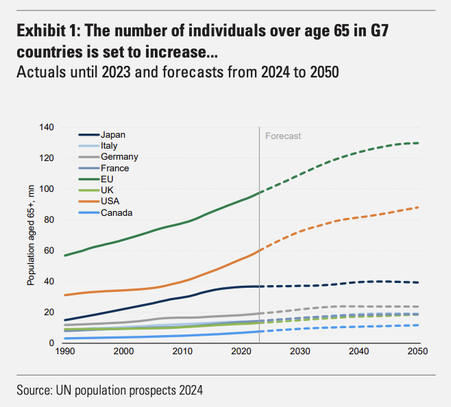
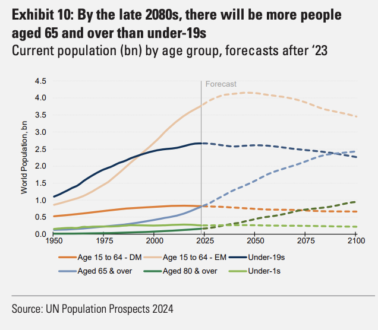

Demografisk medvind eller motvind
Demografi
Befolkningen under 19 år har redan nått sin topp och befolkningen som är äldre än 65+ kommer att dubbleras fram till 2050. Personer som är äldre än 80 år kommer att öka snabbt. Det kommer bli vanligare att se gamlingar på stan och det kommer att vara allt mer sällsynt att se barn.

Andelen av alla personer som jobbar i en ekonomi kommer att minska från dagens nivåer på runt 67 procent inom EU för 55 procent till 2050. Det går att vända på ekvationen och tänka på antalet personer som är beroende per 100 arbetande personer, från att idag vara ca 33 personer som är äldre än 65+ per 100 arbetande i UK så ökar den andelen till 47 till 2040. Många personer går därmed i pension och färre personer är kvar i arbete. Förväntade livslängden ökar i varje land runt om i världen, där de flesta har 5-7 år längre förväntad livslängd från 1990 till 2022.

Fertilitetsgraden är för låg för att kunna åtgärda detta, utan det blir en krympande befolkning på lång sikt. Just nu lever många länder på det som kallas för “demographic dividend”, alltså att det är för få barn som föds vilket innebär mindre vabbande och fler kvinnor kan spendera mer tid på jobb vilket gör att ekonomin blir större och växer snabbare. Polen och Kina rider på denna våg i sin fullaste utsträckning, men kommer också att drabbas hårt av befolkningstapp i mellan 2070 och 2100.
Vad innebär allt detta
- Färre barn innebär att det behövs färre förskolor
- Pensionsåldern kommer att behöva öka
- Efterfrågan på sådant som äldre befolkning behöver kommer att öka. Läkemedel, medtech, underhållning, glasögon, hushållsrobotar, skydd mot bedrägerier och annan teknik som är enkel att lära sig.
- AI och teknik innovation kommer att behöva ta större plats i samhället för att täcka det gapet som uppstår när personer går i pension. För att ekonomin inte ska minska behöver vi teknik för att täcka hålet.
Att förvänta sig att det kommer att vara en ung servitris på restaurangen i framtiden är bara att glömma. Det kommer att finnas automatiserade tjänster för att få sin order till sitt bord, men det är sannolikt en människa med i den ekvation om det inte är en väldigt fin restaurang.
Tjänster som är svåra att ersätta som kräver att ha en fysisk person på plats lär bli betydligt dyrare än vad det är idag, med tjänster som hantverkare/sjuksköterska/rörmokare etc. Dessa är väldigt svåra att bygga bort med AI eftersom AI är sämst på finmotorik i okontrollerade miljöer jämfört med människor. Även om vi får Claude 10 så lär den inte vara särskilt mycket bättre än en 10-åring att virka.

Ett antagande här är att vi inte börjar kriga med varandra och får någon form av större krig mellan länder. Redan nu 2025 är det ganska stökigt i världen, men fortfarande har vi ingen extrem förändring där det påverkar demografin i världen i stora drag, trots tragedier runt om i världen.
Investeringsteser
Dessa bolag kan tänkas få en större och troligen en mycket större marknad än vad de har idag i samband med att snitt befolkningen blir betydligt äldre.
- Veteranpoolen
- Careium
- Truecaller
- Synsam
Veteranpoolen faller sig naturligt, det finns en större pool med personer som kan tänka sig jobba lite till efter pensionen med uppgifter som hantverk/städ etc. Det är bra för arbetsgivaren som inte betalar lika höga arbetsgivaravgifter, arbetstagaren som inte betalar lika mycket skatt och det är bra då man får mer pension. Efterfrågan på dessa typer av tjänster lär fortsätta vara hög. Veteranpoolen ser ut att ha en mycket bra medvind rent demografiskt.
Careium gör välfärdsteknik som detektorer och larmtjänster inriktat mot äldre. Kommuner i Sverige har ingen kapacitet att låta alla personer vara på äldreboenden vilket är en bra grej för Careium som då kan sälja sina tjänster till kommunerna som sedan distribuerar det till sin äldre befolkning som har denna utrustning hemma för att kunna kalla på tjänster från kommunen. Det sparar pengar för kommunen och det är en frihet för den äldre som kan bo kvar i sitt hus längre. När den äldre befolkningen växer så kommer det att behövas fler enheter och om Careium lyckats bra så bör de även lyckats få ut fler enheter per person som täcker andra behov. Solklar demografisk medvind.
Truecaller låter kanske inte som ett bolag som gynnas av äldre befolkning, men vad vi kan se redan nu är allt mer sofistikerade bedragare som använder sig av AI tjänster för att härma närståendes röster och lurar äldre att swisha pengar till det som de tror är sina egna barn. Med Truecaller familjeplan går det att installera Truecaller premium på föräldrarnas telefoner så att det är uppenbart att det är en bedragare som ringer och gör det svårare att bli lurad. I dagsläget är det få som använder detta, men om man får tro på ledningen i Truecaller ska detta bli stort.
Synsam, äldre har generellt sämre syn och pengar brukar inte vara ett så stort problem, då kan man lika gärna köpa sig ett schysst abonnemang från Synsam för att få riktigt bra brillor löpande. Kan helt klart vara ett bolag som får en demografisk medvind i sin segel.